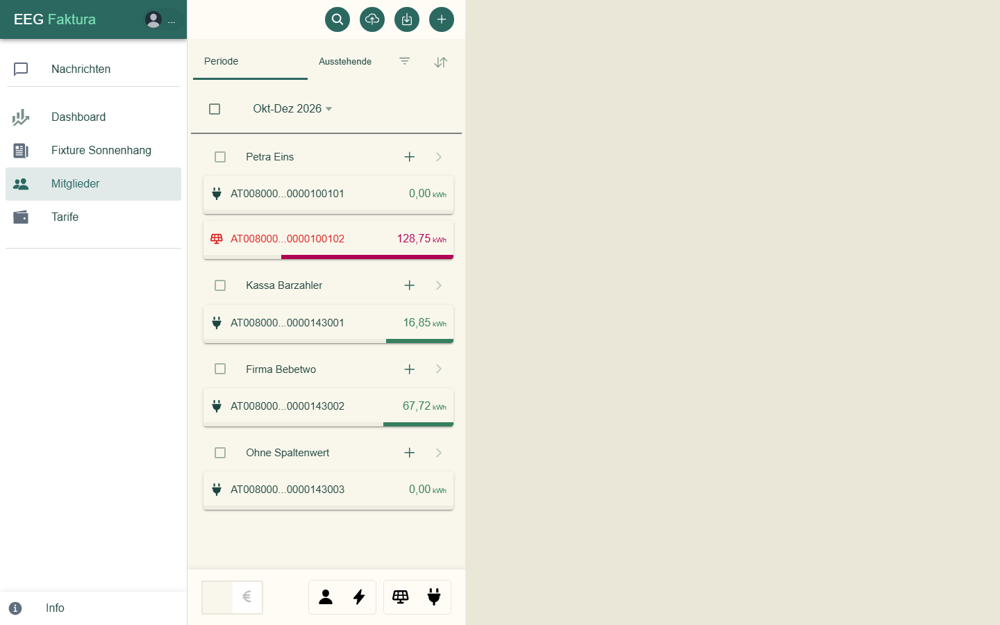
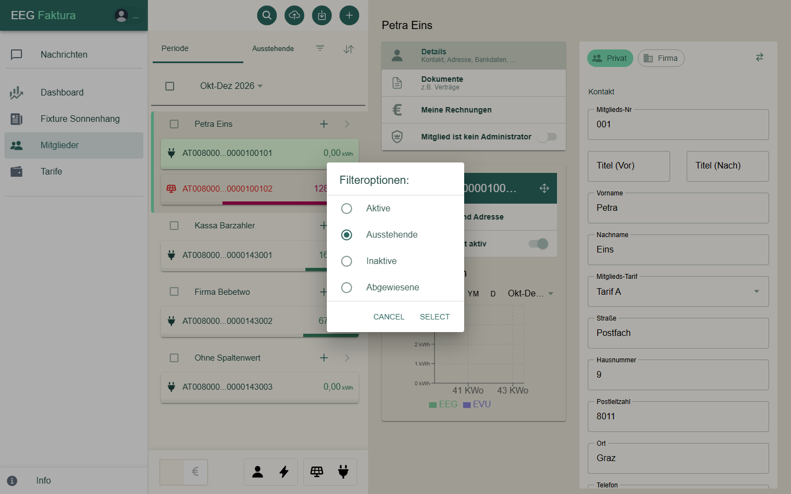
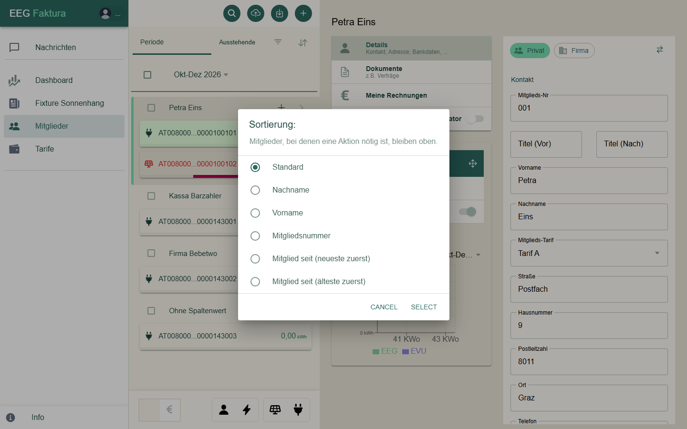
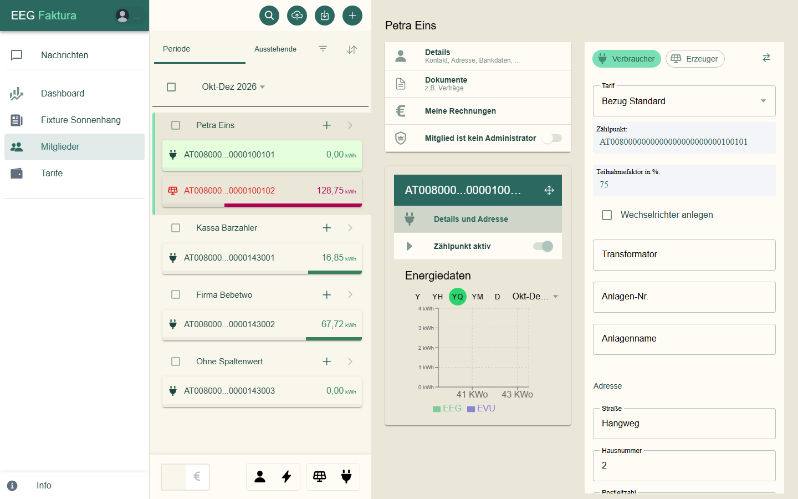
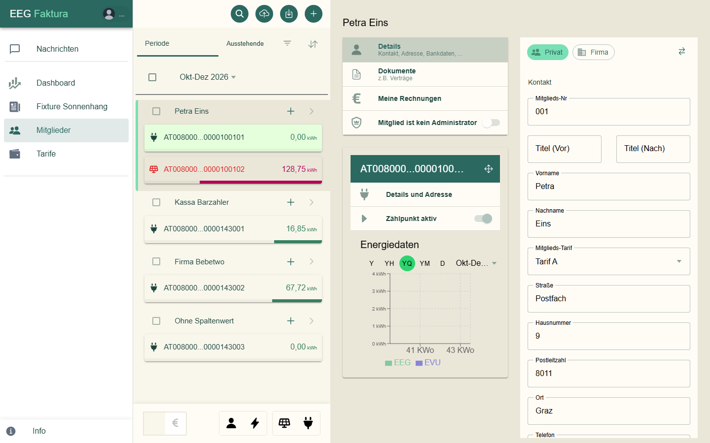
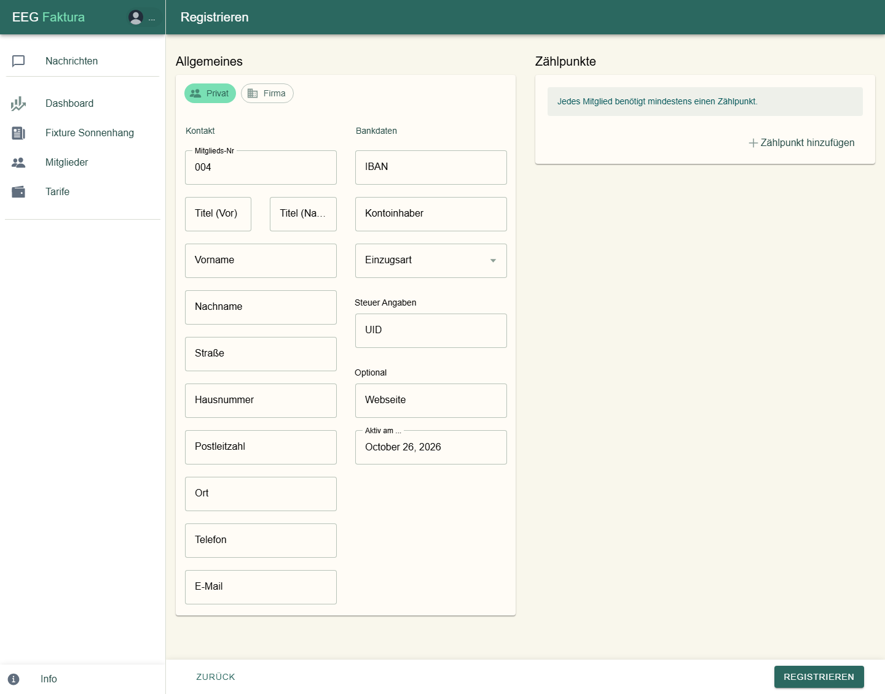
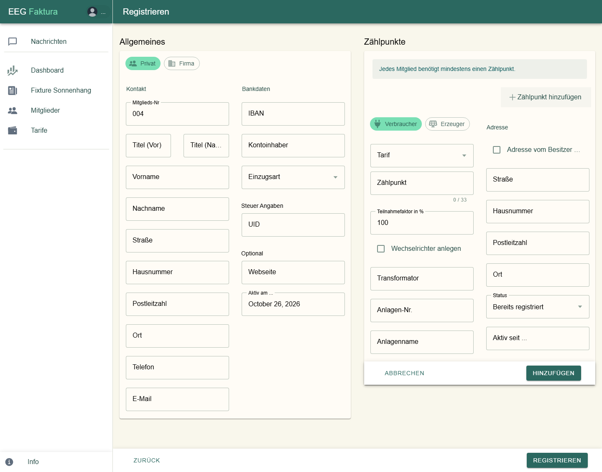
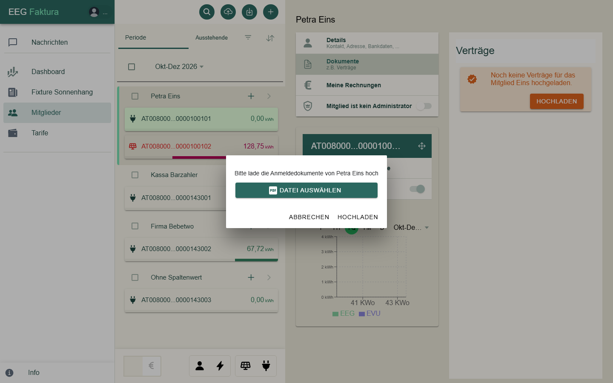

Mitglieder & Zählpunkte¶
Unter Mitglieder verwaltest du die Mitglieder deiner Gemeinschaft und ihre Zählpunkte.
Die Mitgliederliste¶

Jedes Mitglied steht mit seinem Namen in der Liste, darunter eine Karte je Zählpunkt mit der Energiemenge im gewählten Zeitraum. Das Symbol zeigt die Richtung: ein Stecker für Verbrauch, ein Solarmodul für Erzeugung. Der Balken unter dem Wert zeigt den Anteil des Zählpunkts.
Knöpfe oben¶
| Knopf | Funktion |
|---|---|
| Lupe | Suche: blendet ein Suchfeld ein, die Liste filtert beim Tippen |
| Wolke mit Pfeil nach oben | Import: Stammdaten (Mitglieder und Zählpunkte) aus einer Excel-Datei einlesen; bei Gemeinschaften ohne Online-Anbindung auch Energiedaten |
| Pfeil nach unten | Export: Daten für einen Zeitraum herunterladen |
| Plus | Neues Mitglied anlegen (siehe unten) |
Zeitraum, Filter und Sortierung¶
- Periode zeigt alle Mitglieder. Den Zeitraum (z. B. „Okt-Dez 2026“) wählst du darunter.
- Der zweite Reiter filtert die Liste. Über das Filter-Symbol wählst du Aktive, Ausstehende, Inaktive oder Abgewiesene.

- Das Pfeil-Symbol ganz rechts öffnet die Sortierung: Standard, Nachname, Vorname, Mitgliedsnummer oder Mitglied seit (neueste bzw. älteste zuerst). Mitglieder, bei denen eine Aktion nötig ist, bleiben immer oben.

Farben¶
| Farbe des Zählpunkts | Bedeutung |
|---|---|
| Dunkelgrün | Zählpunkt ist aktiv (oder inaktiv mit früheren Daten) |
| Orange | Anmeldung läuft noch, z. B. wartet eegFaktura auf den Netzbetreiber oder auf die Zustimmung des Mitglieds |
| Rot | vom Netzbetreiber abgewiesen, aufgehoben oder ungültig |
Ein Mitglied, das noch zugelassen werden muss, steht orange mit einem „!“ in der Liste. Steht neben einem Namen grau „inaktiv“, hat das Mitglied keinen aktiven Zählpunkt mehr.
Unten in der Liste¶
- Der Schalter € wechselt in den Abrechnungsmodus. Er gehört zur Abrechnung und wird im Kapitel Abrechnung beschrieben.
- Mit den Symbolen daneben wechselst du zwischen Mitgliedern und Zählpunkten und blendest Verbraucher oder Erzeuger ein und aus.
Ein Mitglied ansehen und ändern¶
Ein Klick auf ein Mitglied öffnet rechts seine Daten, zunächst mit dem ersten Zählpunkt:

| Eintrag | Inhalt |
|---|---|
| Details | Kontakt, Adresse, Bankdaten des Mitglieds |
| Dokumente | Dokumente zum Mitglied, z. B. Verträge |
| Meine Rechnungen | die Rechnungen und Gutschriften des Mitglieds |
| Mitglied ist (kein) Administrator | zeigt, ob das Mitglied EEG-Admin ist (nur Anzeige) |
Details öffnet das Formular des Mitglieds:

- Oben steht, ob das Mitglied Privat oder Firma ist. Ändern kannst du das als EEG-Admin über das Pfeil-Symbol daneben; eegFaktura warnt vorher (bei Privat → Firma wird der Vorname zum Firmennamen).
- Kontakt: Mitglieds-Nr, Titel, Vorname und Nachname (bei Firmen der Firmenname), Mitglieds-Tarif, Adresse, Telefon, E-Mail, UID.
- Bankdaten: IBAN, Kontoinhaber, Einzugsart (Kein SEPA, B2B oder CORE); bei Lastschrift zusätzlich Bankverbindung, Mandatsreferenz und Mandatsdatum.
- Optionals: Mitglied seit.
Änderungen werden gespeichert, sobald du ein Feld verlässt.
Neues Mitglied zulassen¶
Ein neues Mitglied — von dir angelegt oder über eine Registrierung hereingekommen — steht zuerst orange mit „!“ in der Liste und wartet auf die Zulassung. Rechts fragt eegFaktura: „Möchtest du Nachname in deine EEG aufnehmen?“
- Ja, Zulassen öffnet den Dialog „Name zulassen“. Dort kannst du Anmeldedokumente hochladen (z. B. den unterschriebenen Beitritt) und je Zählpunkt angeben, ob er per Offline-Registrierung mit einem Aktivierungs-Code angemeldet wird. Mit Zulassen wird das Mitglied aufgenommen.
- Nein, Löschen löscht das Mitglied mit allen Zählpunkten. Das lässt sich nicht rückgängig machen.
Erst mit dem Zulassen meldet eegFaktura die Zählpunkte bei Gemeinschaften mit Online-Anbindung beim Netzbetreiber an. Bei Gemeinschaften ohne Online-Anbindung werden sie damit aktiv.
Zählpunkte¶
Ein Klick auf eine Zählpunkt-Karte zeigt dessen Daten. Über dem Zählpunkt steht seine Nummer; das Pfeilkreuz daneben verschiebt den Zählpunkt zu einem anderen Mitglied (bisherige Rechnungen bleiben beim alten Mitglied).
- Details und Adresse: Richtung, Tarif, Zählpunktnummer, Teilnahmefaktor, Wechselrichter, Transformator, Anlagen-Nr., Anlagenname und die Adresse des Zählpunkts.
- Zählpunkt aktiv: zeigt, ob der Zählpunkt aktiv ist (nur Anzeige).
- Energiedaten: ein Diagramm der Energiedaten des Zählpunkts (nur bei aktiven Zählpunkten).
Die Richtung (Verbraucher/Erzeuger) eines angemeldeten Zählpunkts ist gesperrt. Ein EEG-Admin kann sie über das Pfeil-Symbol ändern; eegFaktura warnt vorher, denn die Änderung wird nicht an den Netzbetreiber gemeldet.
Status eines Zählpunkts¶
Ist ein Zählpunkt nicht aktiv, steht über den Details ein Hinweis zum Stand:
| Hinweis | Bedeutung |
|---|---|
| Antwort des Netzbetreibers noch ausstehend. | Die Anmeldung ist beim Netzbetreiber, er hat noch nicht geantwortet. |
| Zustimmung des Mitglieds noch ausstehend. | Das Mitglied muss die Datenfreigabe noch bestätigen; bei der Online-Anmeldung bekommt es dazu die Mail „Freigabe-Aufforderung“. |
| Abschlussmeldung vom Netzbetreiber noch ausstehend. | Das Mitglied hat zugestimmt, die Abschlussmeldung des Netzbetreibers fehlt noch. |
| Zählpunkt wurde vom Netzbetreiber abgewiesen. | Der Netzbetreiber hat die Anmeldung abgelehnt. |
| Zählpunkt wurde vom Netzbetreiber nicht angenommen. | Die Anmeldung war ungültig, z. B. weil die Zählpunktnummer nicht gefunden wurde. |
| Zählpunkt wurde vom Netzbetreiber aufgehoben. | Der Netzbetreiber hat die Teilnahme beendet. |
| Zählpunkt inaktiv seit … / inaktiv am … | Der Zählpunkt gehört nicht mehr zur Gemeinschaft („am“: das Ende liegt noch in der Zukunft). |
| Zählpunkt wurde archiviert. | Der Zählpunkt ist abgeschlossen und nur noch zur Ansicht da. |
| Zählpunkt hat eine Warnung, bitte die Prozess History prüfen. | Beim Netzbetreiber gab es eine Unstimmigkeit, siehe Prozesse → Prozess History. |
Bei Abweisung oder Nichtannahme steht der Grund fett darunter, z. B. „Kunde hat Datenfreigabe abgelehnt“. Danach richtest du dich: Ist der Fehler behoben (z. B. Nummer korrigiert), meldest du den Zählpunkt unter Prozesse → Zählpunkt aktivieren erneut an.
Einen ungültigen Zählpunkt, der nie angemeldet wurde, kannst du hier mit Löschen entfernen.
Neues Mitglied anlegen¶
-
Klicke in der Mitgliederliste oben auf Plus. Es öffnet sich Registrieren.

-
Wähle Privat oder Firma und fülle Allgemeines aus. Pflicht sind Vorname und Nachname (bzw. Firmenname), Straße, Hausnummer, Postleitzahl, Ort, E-Mail und die Einzugsart. Die Mitglieds-Nr ist mit der nächsten freien Nummer vorbelegt.
-
Jedes Mitglied braucht mindestens einen Zählpunkt: Klicke auf Zählpunkt hinzufügen.

-
Wähle Verbraucher oder Erzeuger, den Tarif, gib die Zählpunktnummer (33 Zeichen, beginnt mit
AT) und den Teilnahmefaktor in % ein. Mit Adresse vom Besitzer übernehmen wird die Adresse des Mitglieds eingetragen.- Hast du vom Netzbetreiber einen Aktivierungs-Code (Offline-Registrierung), hakst du Offline-Registrierung an und trägst den Code ein.
- Bei Gemeinschaften ohne Online-Anbindung wählst du zusätzlich den Status („Noch nicht registriert“ oder „Bereits registriert“) und das Datum Aktiv seit ….
- Klicke auf Registrieren. Verlässt du die Seite vor dem Speichern, fragt eegFaktura nach.
- Das Mitglied steht jetzt als ausstehend in der Liste. Lasse es zu (siehe Neues Mitglied zulassen) — erst dann werden die Zählpunkte beim Netzbetreiber angemeldet bzw. aktiv. Den Fortschritt siehst du am Status des Zählpunkts.
Zählpunkt zu einem bestehenden Mitglied hinzufügen¶
Klicke in der Mitgliederliste beim Mitglied auf +. Das Formular ist dasselbe wie oben; gespeichert wird mit Registrieren. Ist das Mitglied schon zugelassen, meldet eegFaktura den neuen Zählpunkt bei Gemeinschaften mit Online-Anbindung gleich beim Netzbetreiber an.
Dokumente eines Mitglieds¶
Unter Dokumente legst du Unterlagen zum Mitglied ab, z. B. den unterschriebenen Beitritt. Hochladen (bzw. Hinzufügen) öffnet das Fenster zum Hochladen; erlaubt sind PDF, PNG und JPEG:

Ein Klick auf ein Dokument öffnet es, das Papierkorb-Symbol löscht es endgültig. Dieselben Anmeldedokumente kannst du auch beim Zulassen hochladen.
Prozesse beim Netzbetreiber¶
Vorgänge wie Daten nachfordern, einen Zählpunkt abmelden oder den Teilnahmefaktor ändern findest du unter Prozesse; sie sind im Kapitel Prozesse beim Netzbetreiber beschrieben.